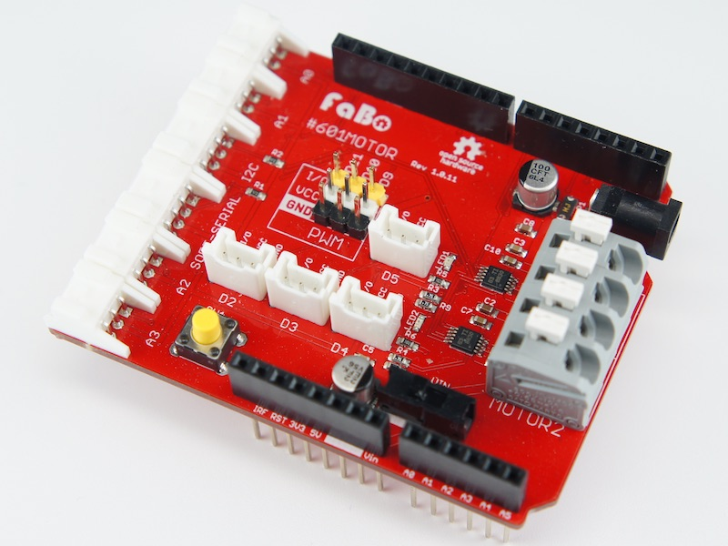

#601 Motor Shield for Arduino

Overview
DCモーター、およびサーボモーターを制御するシールドです。
モーターの他に、Analog、I2C、シリアルの各Brickを使用することができます。
なお、モーターを使用する場合、外部電源が必要になります。
コネクタ
DCモータ用コネクタ
- Moter1用コネクタ
- Moter2用コネクタ
- 外部電源
アナログコネクタ
デジタルコネクタ
PWM/Servoコネクタ
シリアルコネクタ
SoftwareSerialとして使用するため、RX,TXはそれぞれ、D12,D13になります
I2Cコネクタ
DRV8830 Datasheet
Slave Address
| DCモーター |
スレーブアドレス |
| MOTOR1 |
0x64 |
| MOTOR2 |
0x63 |
動作方法について
制御について
DCモーターはI2C、サーボモーターはPWMにて制御を行います。
Moterに対応したスレーブアドレスの制御用レジスタに、速度と動作を設定することで接続されたDCモーターが動作します。
VINピンについて
VINピンの使用状況によってVINスイッチのON/OFFを切り替えて使用して下さい。
エラー発生時について
モーターシールドではエラー発生時にLEDが点灯します。
主な原因として電力不足が考えられます。
for Arduino
・DCモーター用サンプルコード
1
2
3
4
5
6
7
8
9
10
11
12
13
14
15
16
17
18
19
20
21
22
23
24
25
26
27
28
29
30
31
32
33
34
35
36
37
38
39
40
41
42
43
44
45
46
47
48
49
50
51
52
53
54
55
56
57
58
59
60
61
62
63
64
65
66
67
68
69
70
71
72
73 | // I2C制御で使用するライブラリ
#include <Wire.h>
// I2Cアドレス
#define ADR_DRV 0x64 // MOTOR1(DRV8830)のスレーブアドレス
#define ADR_CTR 0x00 // CONTROLレジスタのアドレス
// 速度設定 (電圧)
#define SPEED_MAX 0x3F // 最速 0x3F : 5.00V
#define SPEED_MIN 0x09 // 最遅 0x06 : 0.48V
// モーター制御 (ブリッジ制御)
#define MODE_STANBY B00 // スタンバイ(未制御)
#define MODE_REVERSE B01 // 逆転
#define MODE_FORWARD B10 // 正転
#define MODE_BRAKE B11 // ブレーキ(停止)
/*
* モーター制御コマンド
* mode : 動作モード
* sp : 速度
*/
int set_motor(byte mode, byte sp) {
// モータードライバのアドレス
Wire.beginTransmission(ADR_DRV);
// 制御用レジスタ(ADR_CTR)の書き込み
Wire.write(ADR_CTR);
// 動作の設定
Wire.write( mode + (sp<<2) );
// 書き込み終了
return Wire.endTransmission();
}
/*
* 初期処理
*/
void setup() {
// I2Cの開始
Wire.begin();
// シリアル開始 転送レート：9600bps
Serial.begin(9600);
// スタンバイモード
Serial.println("Standby");
set_motor(MODE_STANBY, SPEED_MIN);
delay(2000);
}
/*
* Loop処理
* 前進>停止>後退>停止のループ
*/
void loop() {
// 正転モード
Serial.println("Forward");
set_motor(MODE_FORWARD, SPEED_MAX);
delay(2000);
// ブレーキモード
Serial.println("Brake");
set_motor(MODE_BRAKE, SPEED_MIN);
delay(2000);
// 逆転モード
Serial.println("Reverse");
set_motor(MODE_REVERSE, SPEED_MAX);
delay(2000);
// ブレーキモード
Serial.println("Brake");
set_motor(MODE_BRAKE, SPEED_MIN);
delay(2000);
}
|
・サーボモーター用サンプルコード
1
2
3
4
5
6
7
8
9
10
11
12
13
14
15
16
17
18
19
20
21
22
23
24
25
26
27
28
29
30
31
32
33
34
35
36
37
38
39
40
41
42
43
44
45
46
47
48
49 | // サーボモーター用ライブラリ
#include <Servo.h>
// サーボモーター用ピン
#define PIN_SERVO 9
// サーボモーター位置設定用
int angle = 0;
// サーボ制御用オブジェクト作成
Servo myServo;
/*
* 初期処理
*/
void setup() {
// シリアル開始
Serial.begin(9600);
// サーボ制御開始
myServo.attach(PIN_SERVO);
}
/*
* Loop処理
*/
void loop() {
/* 0.01秒間隔で1ずつ移動し、180を超えたら最初の位置に移動 */
for (int i=0; i<5; i++){
for (angle=0; angle<180; angle++){
myServo.write(angle);
delay(10);
}
}
delay(1000);
/* 1秒間隔で左右に振る */
//初期値設定
angle = 10;
for (int i=0; i<5; i++){
myServo.write(angle);
delay(1000);
// 位置切り替え
angle = 180 - angle;
}
delay(1000);
}
|